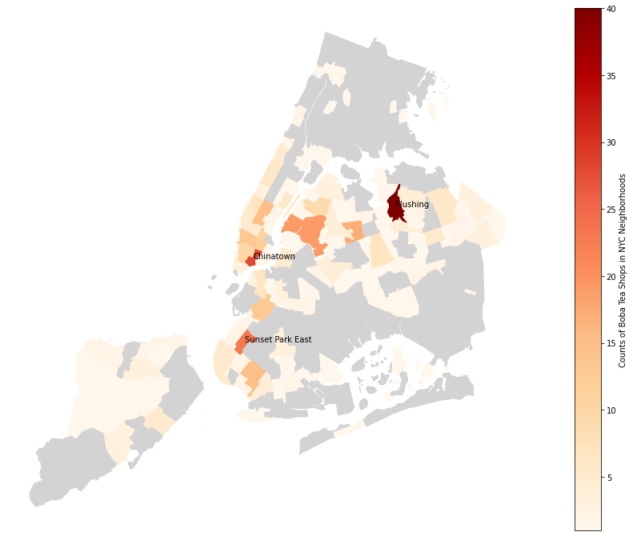
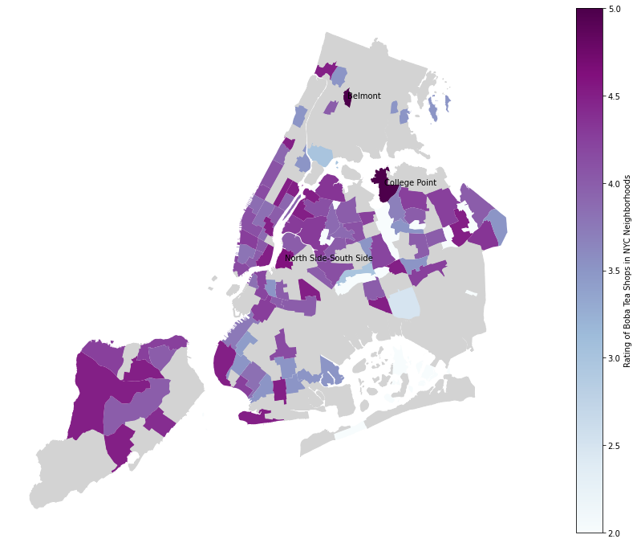
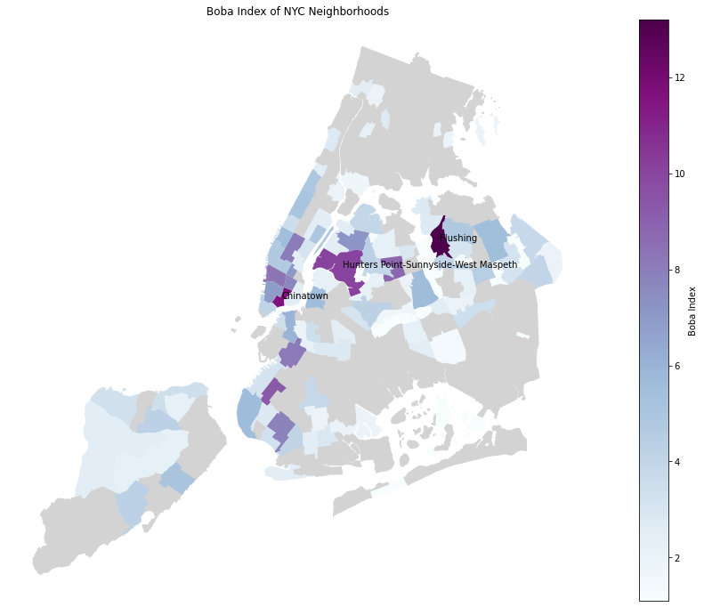

Obsessed with Boba? Analyzing Bubble Tea Shops in NYC Using the Yelp Fusion API
Contents
Obsessed with Boba? Analyzing Bubble Tea Shops in NYC Using the Yelp Fusion API¶
Boba Maps of NYC¶
### Imports for Google Colab Session
# # imports for Google Colab Sessions
# !apt install gdal-bin python-gdal python3-gdal
# # Install rtree - Geopandas requirment
# !apt install python3-rtree
# # Install Geopandas
# !pip install git+git://github.com/geopandas/geopandas.git
# # Install descartes - Geopandas requirment
# !pip install descartes
import os
import numpy as np
import pandas as pd
import geopandas as gpd
import matplotlib.pyplot as plt
C:\Users\datal\anaconda3\envs\boba-nyc\lib\site-packages\pyproj\__init__.py:89: UserWarning: pyproj unable to set database path.
_pyproj_global_context_initialize()
url = 'https://raw.githubusercontent.com/mebauer/boba-nyc/master/teabook/boba-nyc.csv'
df = pd.read_csv(url)
df.head()
| id | alias | name | image_url | is_closed | url | review_count | categories | rating | coordinates | transactions | price | location | phone | display_phone | distance | latitude | longitude | geometry | |
|---|---|---|---|---|---|---|---|---|---|---|---|---|---|---|---|---|---|---|---|
| 0 | Q3fmTHT7zilDWtfzLK9lMA | truedan-new-york-3 | Truedan | https://s3-media2.fl.yelpcdn.com/bphoto/BmUZXO... | False | https://www.yelp.com/biz/truedan-new-york-3?ad... | 99 | [{'alias': 'bubbletea', 'title': 'Bubble Tea'}] | 4.5 | {'latitude': 40.7191742, 'longitude': -73.9962... | ['pickup', 'delivery'] | $$ | {'address1': '208 Grand St', 'address2': None,... | 1.646559e+10 | (646) 559-2886 | 1535.241614 | 40.719174 | -73.996220 | POINT (-73.9962197 40.7191742) |
| 1 | 7-bx74TooPuZKZDNW4WFcQ | chun-yang-tea-new-york | Chun Yang Tea | https://s3-media1.fl.yelpcdn.com/bphoto/JrGwrZ... | False | https://www.yelp.com/biz/chun-yang-tea-new-yor... | 91 | [{'alias': 'bubbletea', 'title': 'Bubble Tea'}] | 4.5 | {'latitude': 40.71617, 'longitude': -73.9971} | ['pickup', 'delivery'] | $$ | {'address1': '26B Elizabeth St', 'address2': '... | 1.212420e+10 | (212) 420-0123 | 1212.877370 | 40.716170 | -73.997100 | POINT (-73.9971 40.71617) |
| 2 | 3aypSFXLfkAL4dhHVFobKg | lazy-sundaes-new-york-6 | Lazy Sundaes | https://s3-media3.fl.yelpcdn.com/bphoto/kEfCYC... | False | https://www.yelp.com/biz/lazy-sundaes-new-york... | 32 | [{'alias': 'bubbletea', 'title': 'Bubble Tea'}... | 4.5 | {'latitude': 40.720597, 'longitude': -73.984539} | ['pickup', 'delivery'] | $$ | {'address1': '23 Clinton St', 'address2': None... | NaN | NaN | 1877.016204 | 40.720597 | -73.984539 | POINT (-73.984539 40.720597) |
| 3 | bVJQEeRNi34-3XN_F1AZEg | xing-fu-tang-new-york | Xing Fu Tang | https://s3-media2.fl.yelpcdn.com/bphoto/cyFHFE... | False | https://www.yelp.com/biz/xing-fu-tang-new-york... | 91 | [{'alias': 'bubbletea', 'title': 'Bubble Tea'}] | 4.5 | {'latitude': 40.7288, 'longitude': -73.98775} | ['pickup', 'delivery'] | NaN | {'address1': '133 2nd Ave', 'address2': '', 'a... | NaN | NaN | 2656.450427 | 40.728800 | -73.987750 | POINT (-73.98775000000001 40.7288) |
| 4 | zupVwJAFYkHDwrsQd2ktXA | fiftylan-union-square-new-york-3 | FIFTYLAN Union Square | https://s3-media3.fl.yelpcdn.com/bphoto/UIwR20... | False | https://www.yelp.com/biz/fiftylan-union-square... | 60 | [{'alias': 'bubbletea', 'title': 'Bubble Tea'}] | 4.0 | {'latitude': 40.735516, 'longitude': -73.989191} | ['pickup', 'delivery'] | NaN | {'address1': '32 Union Square E', 'address2': ... | 1.646767e+10 | (646) 767-0085 | 3367.900728 | 40.735516 | -73.989191 | POINT (-73.98919100000001 40.735516) |
df.describe()
| review_count | rating | phone | distance | latitude | longitude | |
|---|---|---|---|---|---|---|
| count | 414.000000 | 414.000000 | 3.620000e+02 | 414.000000 | 414.000000 | 414.000000 |
| mean | 89.722222 | 3.985507 | 1.613962e+10 | 8980.359386 | 40.716170 | -73.941997 |
| std | 116.765312 | 0.608481 | 2.375761e+09 | 5684.076763 | 0.058255 | 0.084129 |
| min | 1.000000 | 1.000000 | 1.201432e+10 | 953.875131 | 40.537609 | -74.166080 |
| 25% | 16.250000 | 3.500000 | 1.347732e+10 | 3954.891025 | 40.689505 | -73.994920 |
| 50% | 49.000000 | 4.000000 | 1.718286e+10 | 8254.243639 | 40.731610 | -73.975096 |
| 75% | 109.000000 | 4.500000 | 1.718886e+10 | 13019.588280 | 40.757300 | -73.880179 |
| max | 740.000000 | 5.000000 | 1.934235e+10 | 25132.157979 | 40.886959 | -73.702410 |
df.describe(include=['O']).T
| count | unique | top | freq | |
|---|---|---|---|---|
| id | 414 | 414 | Q3fmTHT7zilDWtfzLK9lMA | 1 |
| alias | 414 | 414 | truedan-new-york-3 | 1 |
| name | 414 | 259 | Kung Fu Tea | 26 |
| image_url | 409 | 409 | https://s3-media2.fl.yelpcdn.com/bphoto/BmUZXO... | 1 |
| url | 414 | 414 | https://www.yelp.com/biz/truedan-new-york-3?ad... | 1 |
| categories | 414 | 177 | [{'alias': 'bubbletea', 'title': 'Bubble Tea'}] | 115 |
| coordinates | 414 | 409 | {'latitude': 40.71697, 'longitude': -73.99471} | 2 |
| transactions | 414 | 5 | ['pickup', 'delivery'] | 229 |
| price | 258 | 3 | $ | 166 |
| location | 414 | 411 | {'address1': '90-15 Queens Blvd', 'address2': ... | 2 |
| display_phone | 362 | 357 | (718) 395-8297 | 2 |
| geometry | 414 | 409 | POINT (-73.99471 40.71697) | 2 |
Map boba data for NYC neighborhoods¶
# read neighborhood data as geodataframe
url = 'https://data.cityofnewyork.us/api/geospatial/cpf4-rkhq?method=export&format=Shapefile'
neighborhoods = gpd.read_file(url)
neighborhoods.head()
| boro_code | boro_name | county_fip | ntacode | ntaname | shape_area | shape_leng | geometry | |
|---|---|---|---|---|---|---|---|---|
| 0 | 4.0 | Queens | 081 | QN51 | Murray Hill | 5.248828e+07 | 33266.904856 | POLYGON ((-73.80379 40.77561, -73.80099 40.775... |
| 1 | 4.0 | Queens | 081 | QN27 | East Elmhurst | 1.972685e+07 | 19816.711894 | POLYGON ((-73.86110 40.76366, -73.85993 40.762... |
| 2 | 4.0 | Queens | 081 | QN41 | Fresh Meadows-Utopia | 2.777485e+07 | 22106.431272 | POLYGON ((-73.77758 40.73019, -73.77849 40.729... |
| 3 | 1.0 | Manhattan | 061 | MN17 | Midtown-Midtown South | 3.019153e+07 | 27032.700375 | POLYGON ((-73.97301 40.76428, -73.97141 40.763... |
| 4 | 2.0 | Bronx | 005 | BX09 | Soundview-Castle Hill-Clason Point-Harding Park | 5.198380e+07 | 67340.977626 | MULTIPOLYGON (((-73.88064 40.81852, -73.88098 ... |
# re-project neighborhood data
neighborhoods = neighborhoods.to_crs('EPSG:4326')
# open the boba dataframe as geo data frame using the lat-long info in the data
gdf = gpd.GeoDataFrame(df, crs=neighborhoods.crs, geometry=gpd.points_from_xy(df.longitude, df.latitude))
print(neighborhoods.crs)
print(gdf.crs)
---------------------------------------------------------------------------
CRSError Traceback (most recent call last)
~\AppData\Local\Temp\ipykernel_44300\3558824444.py in <module>
1 # re-project neighborhood data
----> 2 neighborhoods = neighborhoods.to_crs('EPSG:4326')
3
4 # open the boba dataframe as geo data frame using the lat-long info in the data
5 gdf = gpd.GeoDataFrame(df, crs=neighborhoods.crs, geometry=gpd.points_from_xy(df.longitude, df.latitude))
~\anaconda3\envs\boba-nyc\lib\site-packages\geopandas\geodataframe.py in to_crs(self, crs, epsg, inplace)
1273 else:
1274 df = self.copy()
-> 1275 geom = df.geometry.to_crs(crs=crs, epsg=epsg)
1276 df.geometry = geom
1277 df.crs = geom.crs
~\anaconda3\envs\boba-nyc\lib\site-packages\geopandas\geoseries.py in to_crs(self, crs, epsg)
1118 """
1119 return GeoSeries(
-> 1120 self.values.to_crs(crs=crs, epsg=epsg), index=self.index, name=self.name
1121 )
1122
~\anaconda3\envs\boba-nyc\lib\site-packages\geopandas\array.py in to_crs(self, crs, epsg)
766 )
767 if crs is not None:
--> 768 crs = CRS.from_user_input(crs)
769 elif epsg is not None:
770 crs = CRS.from_epsg(epsg)
~\anaconda3\envs\boba-nyc\lib\site-packages\pyproj\crs\crs.py in from_user_input(cls, value, **kwargs)
477 if isinstance(value, cls):
478 return value
--> 479 return cls(value, **kwargs)
480
481 def get_geod(self) -> Optional[Geod]:
~\anaconda3\envs\boba-nyc\lib\site-packages\pyproj\crs\crs.py in __init__(self, projparams, **kwargs)
324 self._local.crs = projparams
325 else:
--> 326 self._local.crs = _CRS(self.srs)
327
328 @property
pyproj\_crs.pyx in pyproj._crs._CRS.__init__()
CRSError: Invalid projection: EPSG:4326: (Internal Proj Error: proj_create: no database context specified)
# join the neighborhood information to each boba shop
join_df = gpd.sjoin(gdf, neighborhoods, how="left")
print(join_df.shape)
join_df.head()
(414, 27)
| id | alias | name | image_url | is_closed | url | review_count | categories | rating | coordinates | ... | longitude | geometry | index_right | boro_code | boro_name | county_fip | ntacode | ntaname | shape_area | shape_leng | |
|---|---|---|---|---|---|---|---|---|---|---|---|---|---|---|---|---|---|---|---|---|---|
| 0 | Q3fmTHT7zilDWtfzLK9lMA | truedan-new-york-3 | Truedan | https://s3-media2.fl.yelpcdn.com/bphoto/BmUZXO... | False | https://www.yelp.com/biz/truedan-new-york-3?ad... | 99 | [{'alias': 'bubbletea', 'title': 'Bubble Tea'}] | 4.5 | {'latitude': 40.7191742, 'longitude': -73.9962... | ... | -73.996220 | POINT (-73.99622 40.71917) | 94 | 1.0 | Manhattan | 061 | MN24 | SoHo-TriBeCa-Civic Center-Little Italy | 2.503268e+07 | 26855.031527 |
| 1 | 7-bx74TooPuZKZDNW4WFcQ | chun-yang-tea-new-york | Chun Yang Tea | https://s3-media1.fl.yelpcdn.com/bphoto/JrGwrZ... | False | https://www.yelp.com/biz/chun-yang-tea-new-yor... | 91 | [{'alias': 'bubbletea', 'title': 'Bubble Tea'}] | 4.5 | {'latitude': 40.71617, 'longitude': -73.9971} | ... | -73.997100 | POINT (-73.99710 40.71617) | 88 | 1.0 | Manhattan | 061 | MN27 | Chinatown | 1.450188e+07 | 20786.254332 |
| 2 | 3aypSFXLfkAL4dhHVFobKg | lazy-sundaes-new-york-6 | Lazy Sundaes | https://s3-media3.fl.yelpcdn.com/bphoto/kEfCYC... | False | https://www.yelp.com/biz/lazy-sundaes-new-york... | 32 | [{'alias': 'bubbletea', 'title': 'Bubble Tea'}... | 4.5 | {'latitude': 40.720597, 'longitude': -73.984539} | ... | -73.984539 | POINT (-73.98454 40.72060) | 88 | 1.0 | Manhattan | 061 | MN27 | Chinatown | 1.450188e+07 | 20786.254332 |
| 3 | bVJQEeRNi34-3XN_F1AZEg | xing-fu-tang-new-york | Xing Fu Tang | https://s3-media2.fl.yelpcdn.com/bphoto/cyFHFE... | False | https://www.yelp.com/biz/xing-fu-tang-new-york... | 91 | [{'alias': 'bubbletea', 'title': 'Bubble Tea'}] | 4.5 | {'latitude': 40.7288, 'longitude': -73.98775} | ... | -73.987750 | POINT (-73.98775 40.72880) | 139 | 1.0 | Manhattan | 061 | MN22 | East Village | 1.089424e+07 | 13555.232094 |
| 4 | zupVwJAFYkHDwrsQd2ktXA | fiftylan-union-square-new-york-3 | FIFTYLAN Union Square | https://s3-media3.fl.yelpcdn.com/bphoto/UIwR20... | False | https://www.yelp.com/biz/fiftylan-union-square... | 60 | [{'alias': 'bubbletea', 'title': 'Bubble Tea'}] | 4.0 | {'latitude': 40.735516, 'longitude': -73.989191} | ... | -73.989191 | POINT (-73.98919 40.73552) | 32 | 1.0 | Manhattan | 061 | MN21 | Gramercy | 7.526916e+06 | 12096.891148 |
5 rows × 27 columns
# get the counts of boba shops groupped by neighborhood names
nt_count = join_df.groupby(by='ntaname')['id'].count().sort_values(ascending=True)
nt_count = nt_count.reset_index()
nt_count.columns = ['ntaname', 'counts']
nt_count.describe()
| counts | |
|---|---|
| count | 93.000000 |
| mean | 4.451613 |
| std | 6.289253 |
| min | 1.000000 |
| 25% | 1.000000 |
| 50% | 2.000000 |
| 75% | 5.000000 |
| max | 40.000000 |
# get the average ratings of boba shops groupped by neighborhood names
nt_rating = join_df.groupby(by='ntaname')['rating'].mean().sort_values(ascending=True)
nt_rating = nt_rating.reset_index()
nt_rating.columns = ['ntaname','rating']
nt_rating.describe()
| rating | |
|---|---|
| count | 93.000000 |
| mean | 4.018089 |
| std | 0.472595 |
| min | 2.000000 |
| 25% | 3.833333 |
| 50% | 4.000000 |
| 75% | 4.333333 |
| max | 5.000000 |
# get the average ratings of boba shops groupped by neighborhood names
nt_revcount = join_df.groupby(by='ntaname')['review_count'].sum().sort_values(ascending=True)
nt_revcount = nt_revcount.reset_index()
nt_revcount.columns = ['ntaname','review_count']
nt_revcount.describe()
| review_count | |
|---|---|
| count | 93.000000 |
| mean | 399.408602 |
| std | 812.981820 |
| min | 1.000000 |
| 25% | 32.000000 |
| 50% | 114.000000 |
| 75% | 384.000000 |
| max | 5093.000000 |
# merge the counts, ratings, review counts by neighborhood dataframe to the neighborhood geodataframe, which contains spatial information of the neighborhoods
group_nt_gdf = neighborhoods.merge(nt_count, how="left", left_on='ntaname', right_on='ntaname')
group_nt_gdf = group_nt_gdf.merge(nt_rating, how="left", left_on='ntaname', right_on='ntaname')
group_nt_gdf = group_nt_gdf.merge(nt_revcount, how="left", left_on='ntaname', right_on='ntaname')
group_nt_gdf.head()
| boro_code | boro_name | county_fip | ntacode | ntaname | shape_area | shape_leng | geometry | counts | rating | review_count | |
|---|---|---|---|---|---|---|---|---|---|---|---|
| 0 | 4.0 | Queens | 081 | QN51 | Murray Hill | 5.248828e+07 | 33266.904856 | POLYGON ((-73.80379 40.77561, -73.80099 40.775... | 4.0 | 4.250000 | 56.0 |
| 1 | 4.0 | Queens | 081 | QN27 | East Elmhurst | 1.972685e+07 | 19816.711894 | POLYGON ((-73.86110 40.76366, -73.85993 40.762... | NaN | NaN | NaN |
| 2 | 4.0 | Queens | 081 | QN41 | Fresh Meadows-Utopia | 2.777485e+07 | 22106.431272 | POLYGON ((-73.77758 40.73019, -73.77849 40.729... | 5.0 | 4.000000 | 338.0 |
| 3 | 1.0 | Manhattan | 061 | MN17 | Midtown-Midtown South | 3.019153e+07 | 27032.700375 | POLYGON ((-73.97301 40.76428, -73.97141 40.763... | 15.0 | 3.833333 | 2564.0 |
| 4 | 2.0 | Bronx | 005 | BX09 | Soundview-Castle Hill-Clason Point-Harding Park | 5.198380e+07 | 67340.977626 | MULTIPOLYGON (((-73.88064 40.81852, -73.88098 ... | NaN | NaN | NaN |
# get the lat-long of the centroid of each neighborhood ("label_geometry") for labeling
group_nt_gdf['label_geometry'] = group_nt_gdf['geometry'].centroid
group_nt_gdf.sort_values('counts', ascending=True)
group_nt_gdf.head()
C:\Users\datal\AppData\Local\Temp\ipykernel_14736\2953681496.py:2: UserWarning: Geometry is in a geographic CRS. Results from 'centroid' are likely incorrect. Use 'GeoSeries.to_crs()' to re-project geometries to a projected CRS before this operation.
group_nt_gdf['label_geometry'] = group_nt_gdf['geometry'].centroid
| boro_code | boro_name | county_fip | ntacode | ntaname | shape_area | shape_leng | geometry | counts | rating | review_count | label_geometry | |
|---|---|---|---|---|---|---|---|---|---|---|---|---|
| 0 | 4.0 | Queens | 081 | QN51 | Murray Hill | 5.248828e+07 | 33266.904856 | POLYGON ((-73.80379 40.77561, -73.80099 40.775... | 4.0 | 4.250000 | 56.0 | POINT (-73.80955 40.76835) |
| 1 | 4.0 | Queens | 081 | QN27 | East Elmhurst | 1.972685e+07 | 19816.711894 | POLYGON ((-73.86110 40.76366, -73.85993 40.762... | NaN | NaN | NaN | POINT (-73.86840 40.76335) |
| 2 | 4.0 | Queens | 081 | QN41 | Fresh Meadows-Utopia | 2.777485e+07 | 22106.431272 | POLYGON ((-73.77758 40.73019, -73.77849 40.729... | 5.0 | 4.000000 | 338.0 | POINT (-73.78372 40.73489) |
| 3 | 1.0 | Manhattan | 061 | MN17 | Midtown-Midtown South | 3.019153e+07 | 27032.700375 | POLYGON ((-73.97301 40.76428, -73.97141 40.763... | 15.0 | 3.833333 | 2564.0 | POINT (-73.98350 40.75573) |
| 4 | 2.0 | Bronx | 005 | BX09 | Soundview-Castle Hill-Clason Point-Harding Park | 5.198380e+07 | 67340.977626 | MULTIPOLYGON (((-73.88064 40.81852, -73.88098 ... | NaN | NaN | NaN | POINT (-73.85619 40.81805) |
# create a choropleth map of boba shop counts in NYC neighborhoods
fig, ax = plt.subplots(figsize=(20, 12))
missing_kwds={"color": "lightgrey","edgecolor": "lightgrey","label": "Missing values"}
group_nt_gdf.plot(ax=ax, column='counts', cmap='OrRd', edgecolor="none", linewidth=1, legend=True, legend_kwds = {'label': "Counts of Boba Tea Shops in NYC Neighborhoods"}, missing_kwds=missing_kwds)
# lebel the top 3 neighborhoods
top_counts = group_nt_gdf.sort_values("counts", ascending=False)[0:3]
for x, y, label in zip(top_counts.label_geometry.x, top_counts.label_geometry.y, top_counts.ntaname):
ax.annotate(label, xy=(x, y))
ax.set_axis_off()

# create a choropleth map of average boba shop ratings in NYC neighborhoods
fig, ax = plt.subplots(figsize=(20, 12))
missing_kwds={"color": "lightgrey","edgecolor": "lightgrey","label": "Missing values"}
group_nt_gdf.plot(
ax=ax, column='rating', cmap='BuPu', edgecolor="none", linewidth=1, legend=True,
legend_kwds = {'label': "Rating of Boba Tea Shops in NYC Neighborhoods"}, missing_kwds=missing_kwds)
# lebel the top 3 neighborhoods
top_rated = group_nt_gdf.sort_values("rating", ascending=False)[0:3]
for x, y, label in zip(top_rated.label_geometry.x, top_rated.label_geometry.y, top_rated.ntaname):
ax.annotate(label, xy=(x, y))
ax.set_axis_off()

# Put the maps side to side..
# create a choropleth map of boba shop ratings in NYC neighborhoods
# and proportional symbol maps of boba shop counts and boba shop review counts in NYC neighborhoods
fig, ax = plt.subplots(2, 2, figsize=(30, 25))
# draw average rating of boba tea shops
ax[0][0].title.set_text('Average Ratings of Boba Shops in NYC')
missing_kwds={"color": "lightgrey","edgecolor": "lightgrey","label": "Missing values"}
group_nt_gdf.plot(ax=ax[0][0],
column='rating',
cmap='BuPu',
edgecolor="none",
linewidth=1,
legend=True,
legend_kwds = {
'label': "Rating of Boba Tea Shops in NYC Neighborhoods"
},
missing_kwds = missing_kwds
)
# To create proportional symbol maps,
# create a copy of the geodataframe using the centroids coordinate as the geometry
group_nt_gdf_pt = group_nt_gdf.copy()
group_nt_gdf_pt['geometry'] = group_nt_gdf_pt['label_geometry']
group_nt_gdf_pt.head()
# draw counts of boba tea shops
ax[0][1].title.set_text('Counts of Boba Shops in NYC')
neighborhoods.plot(ax=ax[0][1], color="#ebd7b8", edgecolor="white",linewidth=0.5, alpha=1)
group_nt_gdf_pt.plot(
ax=ax[0][1], color="#2e2622", markersize=group_nt_gdf_pt.counts * 50, alpha=0.5, edgecolor='#2e2622', linewidth=0.4, legend=True, label="Counts of Boba Tea Shops in NYC Neighborhoods")
# draw counts of reviews
ax[1][0].title.set_text('Counts of Boba Shops Reviews in NYC')
neighborhoods.plot(ax=ax[1][0], color="#b8bd88", edgecolor="whitesmoke",linewidth=0.5, alpha=1)
group_nt_gdf_pt.plot(
ax=ax[1][0], color="#2e2622", markersize=group_nt_gdf_pt.review_count / 2, alpha=0.4, edgecolor='#2e2622', linewidth=0.4, legend=True, label="Counts of Boba Shops Reviews in NYC Neighborhoods")
ax[0][0].set_axis_off()
ax[0][1].set_axis_off()
ax[1][0].set_axis_off()
ax[1][1].set_axis_off()
ax[0][1].legend(loc='lower right', markerscale=0.7, frameon=False)
ax[1][0].legend(loc='lower right', markerscale=0.7, frameon=False)
''
The top-rated neighborhoods seem to have low counts of boba shops and count of reviews.¶
fewer boba shops…less competition?
fewer counts of review…less representative rating?
group_nt_gdf[['rating', 'counts', 'review_count']].describe()
| rating | counts | review_count | |
|---|---|---|---|
| count | 93.000000 | 93.000000 | 93.000000 |
| mean | 4.018089 | 4.451613 | 399.408602 |
| std | 0.472595 | 6.289253 | 812.981820 |
| min | 2.000000 | 1.000000 | 1.000000 |
| 25% | 3.833333 | 1.000000 | 32.000000 |
| 50% | 4.000000 | 2.000000 | 114.000000 |
| 75% | 4.333333 | 5.000000 | 384.000000 |
| max | 5.000000 | 40.000000 | 5093.000000 |
group_nt_gdf.sort_values("rating", ascending=False).dropna()[0:10]
| boro_code | boro_name | county_fip | ntacode | ntaname | shape_area | shape_leng | geometry | counts | rating | review_count | label_geometry | |
|---|---|---|---|---|---|---|---|---|---|---|---|---|
| 64 | 2.0 | Bronx | 005 | BX06 | Belmont | 1.355635e+07 | 17104.422131 | POLYGON ((-73.88309 40.86660, -73.88298 40.866... | 1.0 | 5.0 | 5.0 | POINT (-73.88587 40.85778) |
| 103 | 4.0 | Queens | 081 | QN23 | College Point | 5.055398e+07 | 59454.750110 | MULTIPOLYGON (((-73.86788 40.78736, -73.86803 ... | 1.0 | 5.0 | 2.0 | POINT (-73.84281 40.78092) |
| 145 | 3.0 | Brooklyn | 047 | BK73 | North Side-South Side | 2.886227e+07 | 28155.614043 | POLYGON ((-73.95814 40.72440, -73.95772 40.724... | 5.0 | 4.6 | 434.0 | POINT (-73.95862 40.71492) |
| 122 | 5.0 | Staten Island | 085 | SI07 | Westerleigh | 6.325658e+07 | 41655.704816 | POLYGON ((-74.13047 40.63089, -74.13014 40.629... | 3.0 | 4.5 | 68.0 | POINT (-74.12535 40.61688) |
| 81 | 4.0 | Queens | 081 | QN71 | Old Astoria | 1.562046e+07 | 19367.656081 | POLYGON ((-73.92828 40.77690, -73.92785 40.776... | 1.0 | 4.5 | 124.0 | POINT (-73.92833 40.77157) |
| 63 | 3.0 | Brooklyn | 047 | BK35 | Stuyvesant Heights | 3.140694e+07 | 28239.081099 | POLYGON ((-73.91805 40.68721, -73.91800 40.686... | 1.0 | 4.5 | 49.0 | POINT (-73.93189 40.68817) |
| 97 | 1.0 | Manhattan | 061 | MN28 | Lower East Side | 2.329937e+07 | 26518.511656 | MULTIPOLYGON (((-73.98237 40.70554, -73.98246 ... | 1.0 | 4.5 | 8.0 | POINT (-73.98091 40.71784) |
| 100 | 4.0 | Queens | 081 | QN68 | Queensbridge-Ravenswood-Long Island City | 2.331294e+07 | 27228.382705 | POLYGON ((-73.93453 40.77118, -73.93425 40.771... | 1.0 | 4.5 | 27.0 | POINT (-73.93875 40.75756) |
| 109 | 1.0 | Manhattan | 061 | MN06 | Manhattanville | 1.073480e+07 | 17357.246731 | POLYGON ((-73.94608 40.82126, -73.94640 40.820... | 1.0 | 4.5 | 90.0 | POINT (-73.95382 40.81802) |
| 52 | 2.0 | Bronx | 005 | BX29 | Spuyten Duyvil-Kingsbridge | 2.321411e+07 | 27990.757219 | POLYGON ((-73.89788 40.89028, -73.89827 40.889... | 1.0 | 4.5 | 19.0 | POINT (-73.91067 40.88241) |
NYC Neighborhood Boba Index¶
- that take into account counts of reviews and counts of boba shops in the neighborhood?¶
# make a copy of the boba dataframe
join_df2 = join_df.copy()
# make a copy of the neighborhoods geodataframe
group_nt_gdf2 = group_nt_gdf[['boro_name', 'ntaname', 'geometry', 'label_geometry']].copy()
group_nt_gdf2.head()
| boro_name | ntaname | geometry | label_geometry | |
|---|---|---|---|---|
| 0 | Queens | Murray Hill | POLYGON ((-73.80379 40.77561, -73.80099 40.775... | POINT (-73.80955 40.76835) |
| 1 | Queens | East Elmhurst | POLYGON ((-73.86110 40.76366, -73.85993 40.762... | POINT (-73.86840 40.76335) |
| 2 | Queens | Fresh Meadows-Utopia | POLYGON ((-73.77758 40.73019, -73.77849 40.729... | POINT (-73.78372 40.73489) |
| 3 | Manhattan | Midtown-Midtown South | POLYGON ((-73.97301 40.76428, -73.97141 40.763... | POINT (-73.98350 40.75573) |
| 4 | Bronx | Soundview-Castle Hill-Clason Point-Harding Park | MULTIPOLYGON (((-73.88064 40.81852, -73.88098 ... | POINT (-73.85619 40.81805) |
join_df2['rate_rev'] = join_df2['rating'] * join_df2['review_count']
join_df2.head()
| id | alias | name | image_url | is_closed | url | review_count | categories | rating | coordinates | ... | geometry | index_right | boro_code | boro_name | county_fip | ntacode | ntaname | shape_area | shape_leng | rate_rev | |
|---|---|---|---|---|---|---|---|---|---|---|---|---|---|---|---|---|---|---|---|---|---|
| 0 | Q3fmTHT7zilDWtfzLK9lMA | truedan-new-york-3 | Truedan | https://s3-media2.fl.yelpcdn.com/bphoto/BmUZXO... | False | https://www.yelp.com/biz/truedan-new-york-3?ad... | 99 | [{'alias': 'bubbletea', 'title': 'Bubble Tea'}] | 4.5 | {'latitude': 40.7191742, 'longitude': -73.9962... | ... | POINT (-73.99622 40.71917) | 94 | 1.0 | Manhattan | 061 | MN24 | SoHo-TriBeCa-Civic Center-Little Italy | 2.503268e+07 | 26855.031527 | 445.5 |
| 1 | 7-bx74TooPuZKZDNW4WFcQ | chun-yang-tea-new-york | Chun Yang Tea | https://s3-media1.fl.yelpcdn.com/bphoto/JrGwrZ... | False | https://www.yelp.com/biz/chun-yang-tea-new-yor... | 91 | [{'alias': 'bubbletea', 'title': 'Bubble Tea'}] | 4.5 | {'latitude': 40.71617, 'longitude': -73.9971} | ... | POINT (-73.99710 40.71617) | 88 | 1.0 | Manhattan | 061 | MN27 | Chinatown | 1.450188e+07 | 20786.254332 | 409.5 |
| 2 | 3aypSFXLfkAL4dhHVFobKg | lazy-sundaes-new-york-6 | Lazy Sundaes | https://s3-media3.fl.yelpcdn.com/bphoto/kEfCYC... | False | https://www.yelp.com/biz/lazy-sundaes-new-york... | 32 | [{'alias': 'bubbletea', 'title': 'Bubble Tea'}... | 4.5 | {'latitude': 40.720597, 'longitude': -73.984539} | ... | POINT (-73.98454 40.72060) | 88 | 1.0 | Manhattan | 061 | MN27 | Chinatown | 1.450188e+07 | 20786.254332 | 144.0 |
| 3 | bVJQEeRNi34-3XN_F1AZEg | xing-fu-tang-new-york | Xing Fu Tang | https://s3-media2.fl.yelpcdn.com/bphoto/cyFHFE... | False | https://www.yelp.com/biz/xing-fu-tang-new-york... | 91 | [{'alias': 'bubbletea', 'title': 'Bubble Tea'}] | 4.5 | {'latitude': 40.7288, 'longitude': -73.98775} | ... | POINT (-73.98775 40.72880) | 139 | 1.0 | Manhattan | 061 | MN22 | East Village | 1.089424e+07 | 13555.232094 | 409.5 |
| 4 | zupVwJAFYkHDwrsQd2ktXA | fiftylan-union-square-new-york-3 | FIFTYLAN Union Square | https://s3-media3.fl.yelpcdn.com/bphoto/UIwR20... | False | https://www.yelp.com/biz/fiftylan-union-square... | 60 | [{'alias': 'bubbletea', 'title': 'Bubble Tea'}] | 4.0 | {'latitude': 40.735516, 'longitude': -73.989191} | ... | POINT (-73.98919 40.73552) | 32 | 1.0 | Manhattan | 061 | MN21 | Gramercy | 7.526916e+06 | 12096.891148 | 240.0 |
5 rows × 28 columns
# sum up the (rating * review_count) by neighborhood
nt_raterev2 = join_df2.groupby(by='ntaname')['rate_rev'].sum().sort_values(ascending=True)
nt_raterev2 = nt_raterev2.reset_index()
nt_raterev2.columns = ['ntaname','rate_rev']
nt_raterev2.head()
| ntaname | rate_rev | |
|---|---|---|
| 0 | park-cemetery-etc-Queens | 2.0 |
| 1 | College Point | 10.0 |
| 2 | Fort Greene | 10.5 |
| 3 | Belmont | 25.0 |
| 4 | Georgetown-Marine Park-Bergen Beach-Mill Basin | 28.0 |
# merge to the neighborhood geodataframe
group_nt_gdf2 = group_nt_gdf2.merge(nt_count, how='left', left_on='ntaname', right_on='ntaname')
group_nt_gdf2 = group_nt_gdf2.merge(nt_rating, how='left', left_on='ntaname', right_on='ntaname')
group_nt_gdf2 = group_nt_gdf2.merge(nt_revcount, how='left', left_on='ntaname', right_on='ntaname')
group_nt_gdf2 = group_nt_gdf2.merge(nt_raterev2, how='left', left_on='ntaname', right_on='ntaname')
group_nt_gdf2.head()
| boro_name | ntaname | geometry | label_geometry | counts | rating | review_count | rate_rev | |
|---|---|---|---|---|---|---|---|---|
| 0 | Queens | Murray Hill | POLYGON ((-73.80379 40.77561, -73.80099 40.775... | POINT (-73.80955 40.76835) | 4.0 | 4.250000 | 56.0 | 245.0 |
| 1 | Queens | East Elmhurst | POLYGON ((-73.86110 40.76366, -73.85993 40.762... | POINT (-73.86840 40.76335) | NaN | NaN | NaN | NaN |
| 2 | Queens | Fresh Meadows-Utopia | POLYGON ((-73.77758 40.73019, -73.77849 40.729... | POINT (-73.78372 40.73489) | 5.0 | 4.000000 | 338.0 | 1230.5 |
| 3 | Manhattan | Midtown-Midtown South | POLYGON ((-73.97301 40.76428, -73.97141 40.763... | POINT (-73.98350 40.75573) | 15.0 | 3.833333 | 2564.0 | 9598.5 |
| 4 | Bronx | Soundview-Castle Hill-Clason Point-Harding Park | MULTIPOLYGON (((-73.88064 40.81852, -73.88098 ... | POINT (-73.85619 40.81805) | NaN | NaN | NaN | NaN |
The creation of Boba Index…¶
group_nt_gdf2['boba_index'] = (
# review counts-weighted rating...
group_nt_gdf2['rate_rev'] # sum of (rating * review counts) in neighborhood
/ group_nt_gdf2['review_count'] # / (the total review counts in neighborhood)
# consider competition...
* np.sqrt(group_nt_gdf2['counts']) # * (square root of total boba shop count in neighborhood)
/ (np.sqrt(group_nt_gdf2['counts'])).mean() # / (mean of square root boba shop count in whole NYC)
)
group_nt_gdf2.head()
| boro_name | ntaname | geometry | label_geometry | counts | rating | review_count | rate_rev | boba_index | |
|---|---|---|---|---|---|---|---|---|---|
| 0 | Queens | Murray Hill | POLYGON ((-73.80379 40.77561, -73.80099 40.775... | POINT (-73.80955 40.76835) | 4.0 | 4.250000 | 56.0 | 245.0 | 4.826066 |
| 1 | Queens | East Elmhurst | POLYGON ((-73.86110 40.76366, -73.85993 40.762... | POINT (-73.86840 40.76335) | NaN | NaN | NaN | NaN | NaN |
| 2 | Queens | Fresh Meadows-Utopia | POLYGON ((-73.77758 40.73019, -73.77849 40.729... | POINT (-73.78372 40.73489) | 5.0 | 4.000000 | 338.0 | 1230.5 | 4.489884 |
| 3 | Manhattan | Midtown-Midtown South | POLYGON ((-73.97301 40.76428, -73.97141 40.763... | POINT (-73.98350 40.75573) | 15.0 | 3.833333 | 2564.0 | 9598.5 | 7.996799 |
| 4 | Bronx | Soundview-Castle Hill-Clason Point-Harding Park | MULTIPOLYGON (((-73.88064 40.81852, -73.88098 ... | POINT (-73.85619 40.81805) | NaN | NaN | NaN | NaN | NaN |
# create a choropleth map of Baba Index in NYC neighborhoods
fig, ax = plt.subplots(figsize=(20, 12), sharey=False)
ax.title.set_text('Boba Index of NYC Neighborhoods')
missing_kwds={"color": "lightgrey","edgecolor": "lightgrey","label": "Missing values"}
group_nt_gdf2.plot(
ax=ax, column='boba_index', cmap='BuPu', edgecolor="none", linewidth=1, legend=True,
legend_kwds = {'label': "Boba Index"}, missing_kwds=missing_kwds)
top_rated = group_nt_gdf2.sort_values("boba_index", ascending=False)[0:3]
for x, y, label in zip(top_rated.label_geometry.x, top_rated.label_geometry.y, top_rated.ntaname):
ax.annotate(label, xy=(x, y))
ax.set_axis_off()

group_nt_gdf2.sort_values("boba_index", ascending=False).dropna()[0:10]
| boro_name | ntaname | geometry | label_geometry | counts | rating | review_count | rate_rev | boba_index | |
|---|---|---|---|---|---|---|---|---|---|
| 155 | Queens | Flushing | POLYGON ((-73.82331 40.77958, -73.82355 40.779... | POINT (-73.82887 40.76109) | 40.0 | 3.687500 | 5093.0 | 19257.0 | 13.189555 |
| 88 | Manhattan | Chinatown | POLYGON ((-73.98382 40.72147, -73.98386 40.721... | POINT (-73.99463 40.71561) | 28.0 | 4.000000 | 4803.0 | 19208.0 | 11.671691 |
| 166 | Queens | Hunters Point-Sunnyside-West Maspeth | POLYGON ((-73.92563 40.75214, -73.92442 40.752... | POINT (-73.93121 40.73977) | 19.0 | 4.289474 | 970.0 | 4076.0 | 10.102397 |
| 150 | Brooklyn | Sunset Park East | POLYGON ((-73.98906 40.64412, -73.98978 40.643... | POINT (-74.00465 40.64189) | 23.0 | 3.434783 | 1183.0 | 4148.5 | 9.275888 |
| 144 | Queens | Elmhurst | POLYGON ((-73.86791 40.74493, -73.86788 40.744... | POINT (-73.87712 40.73949) | 17.0 | 4.088235 | 1048.0 | 4059.5 | 8.808885 |
| 140 | Manhattan | West Village | POLYGON ((-73.98990 40.73443, -73.98987 40.733... | POINT (-74.00155 40.73305) | 13.0 | 4.269231 | 1232.0 | 5169.0 | 8.343585 |
| 118 | Brooklyn | Park Slope-Gowanus | POLYGON ((-73.97376 40.68305, -73.97375 40.682... | POINT (-73.98390 40.67123) | 13.0 | 4.269231 | 1764.0 | 7257.0 | 8.181170 |
| 3 | Manhattan | Midtown-Midtown South | POLYGON ((-73.97301 40.76428, -73.97141 40.763... | POINT (-73.98350 40.75573) | 15.0 | 3.833333 | 2564.0 | 9598.5 | 7.996799 |
| 106 | Brooklyn | Bensonhurst West | POLYGON ((-73.97964 40.61556, -73.98022 40.615... | POINT (-73.99526 40.61222) | 15.0 | 3.833333 | 845.0 | 3097.5 | 7.830427 |
| 139 | Manhattan | East Village | POLYGON ((-73.98378 40.72154, -73.98382 40.721... | POINT (-73.98593 40.72762) | 12.0 | 4.041667 | 1652.0 | 6668.5 | 7.712478 |
group_nt_gdf2.describe()
| counts | rating | review_count | rate_rev | boba_index | |
|---|---|---|---|---|---|
| count | 93.000000 | 93.000000 | 93.000000 | 93.000000 | 93.000000 |
| mean | 4.451613 | 4.018089 | 399.408602 | 1576.779570 | 3.959228 |
| std | 6.289253 | 0.472595 | 812.981820 | 3165.047052 | 2.340969 |
| min | 1.000000 | 2.000000 | 1.000000 | 2.000000 | 1.103101 |
| 25% | 1.000000 | 3.833333 | 32.000000 | 124.000000 | 2.481977 |
| 50% | 2.000000 | 4.000000 | 114.000000 | 477.500000 | 3.150041 |
| 75% | 5.000000 | 4.333333 | 384.000000 | 1470.500000 | 4.826066 |
| max | 40.000000 | 5.000000 | 5093.000000 | 19257.000000 | 13.189555 |